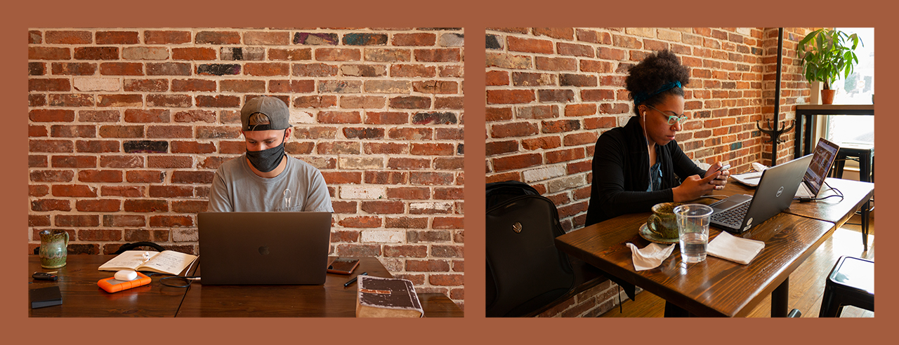
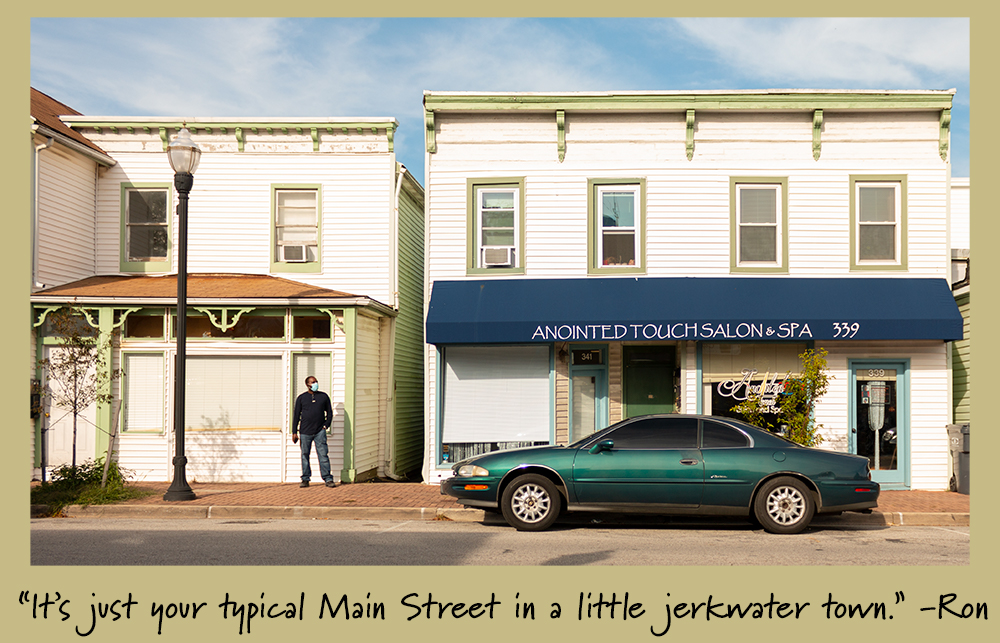

Main Street is the core of Laurel’s historic district. Laurel’s Main Street is home to many family-owned businesses and small businesses. My main focus with this project was the commercial area of Main Street and how it differs from more modern shopping centers in Laurel, primarily the Laurel Towne Centre. In October 2018, this Main Street became the State’s 30th designated Main Street and the first one from Prince George’s County. The Main Street Maryland Program was created in 1998 by the Maryland Department of Housing and Community Development. This program is a revitalization program that provides grant opportunities for local businesses and cities that are designated to help these communities flourish. This funding is supposed to help preserve the history of Main Street and attract new businesses. Craig Moe, mayor of Laurel, felt that this program would allow for bringing more people to the Main Street area that are looking for places to open a business. He also mentioned wanting to have more restaurants, and services for people living in that community as well as entertainment venues. A concern with this revitalization plan is the lack of parking on Main Street. If the city wants to draw more people there needs to be better parking options. This is something that came up in an interview I had with Rodney, the owner of Sports Card Heroes in Patuxent Place on Main St.
Rodney’s business opened in 1991, he mentioned that sports collecting was something he’d always been interested in which is why he opened up shop. He told me that the Patuxent Place strip of Main St was built 6 years before he opened here. Prior to Patuxent Place, this area was mainly houses. But ever since his business opened here, he feels that the area has become more commercial and that businesses are moving in that are attracting people from outside of Main Street. His coworker interjected and mentioned that there are WAY too many hairdressers [hairdressers are essential especially for people like me who are too lazy to do their own hair], so this seems to be a popular business in the area. I actually go to a hairdresser here who worked on Main St a couple of years ago, moved locations, and then came back to Main St. Rodney mentioned that “Main Street has no good parking if we had good parking we could bring in more business.” Even if the revitalization of Main St. is successful and brings more people to the area, where are they supposed to park? The only parking area available is behind the Patuxent Place complex [which is where I park whenever I go to Main St since street parking is scary] and on the street.
Triptych of parking spaces from left to right: street parking on Main St,
top level
of the parking garage at the Towne Centre, and parking
behind Patuxent Place.
The parking garage at the Towne Centre has lower
and upper level parking as well
as parking in front of a few stores.
When people go to the Towne Centre, they know that
parking will always be
available, contrastingly, on Main St there isn't much parking.
This got me thinking about how maybe if Main St did have more parking would people come? People around my age usually go to the Towne Centre to hang out because it’s modern and new. But, I also think part of the reason why Main St may not be so popular is because of the type of businesses there, I feel that people are more interested in big retailers and national franchises. Or maybe people go there for one specific business and then leave. As I was walking around there were restaurants and other shops I could see myself visiting more often. I’ve lived in Laurel almost all my life, I come to Main St to get my hair done, and go to the eye doctor, I even volunteered at the Laurel Museum in high school. Despite how often I go, I never thought to really walk around and explore it.
Jeremy and Catie are owners of Ragamuffins (opened in 2017) and something interesting I found out about them is that it’s not just a coffee shop, they’re also a Church. Prior to the pandemic, they held services in the lower level of the coffee shop. One of the things Catie and Jeremy emphasized was wanting to create a community, Catie mentioned that through their work with the community they realized that people wanted to make meaningful connections with other people. They learned this through their work with Homeless people as well as everyone in general. They thought it would be cool to create a space where they could meet their community, hold events, be a space for people to hang out, and also meet as a Church on Sundays.
Ragamuffins Coffeehouse around noon on a Friday.
Catie loves that Main Street has a small-town feel, in the sense that every business is unique and owned by individuals there is no “big corporate or big concrete”. Jeremy adds to this by describing life in the Baltimore Washington Corridor as “extremely disconnected” and that everyone is insulated by their wealth and they don’t feel that they need their neighbors or see them often [not true in my case, I see my neighbors sometimes and there was a time when they took a vacation so my sisters and I helped feed their fish while they were away. We’re always friendly, it’s not like we just ignore their existence]. However, he mentioned that when you come to Main St you know the people you’re doing businesses with and walking the sidewalk with so you start to establish relationships. When people come down to Main Street they get the feeling like their on vacation, somewhere small and connected rather than their everyday disconnected lives. When I told them that with my project I was juxtaposing Main St with the Towne Centre, Catie made the comment that what she loves about Main Street is that the businesses there are people’s passions and visions. She’s had people come in and hold meetings regarding opening up their own businesses on Main St, so for her it was exciting to be a part of that process. They mentioned two sisters that opened a hair salon up the street from Ragamuffins [this is where I go!] and they came and had coffee at Ragamuffins and spoke with Catie and Jeremey. So overall, the sense of community in Main St and being able to bring community together are the key points I took from speaking to these two owners.
Image of the Town Center with Catie's words on the glass.

Young professionals getting work done. I noticed that most of the people
at the coffeeshop looked to be under 40,
It's cozy
and I feel that the music they play is geared towards younger crowds.
The brick wall is also a nice background
for photos, and the drinks are very Instagrammable.
The conversation I had with the coffee shop owners was the longest one I had out of the three businesses I spoke to. I think it’s because I was the most excited to visit their place because the pictures online looked cool but also because they really loved talking about their business and Main St. When I first walked in they offered me a drink and I politely declined but at the end of the interview, Catie told the barista to make me something so that I could take a picture of it. That was her excuse to give me a free drink which I thought was funny. I rarely ever drink coffee, the only time I’ve had coffee was during finals or midterms and it was those iced coffee Starbucks drinks that came in a glass bottle. I only drank the mocha flavored ones because they tasted like chocolate milk. I was happy Catie chose to give me a Mocha and I still wonder why she chose that instead of something else. I told them I’d definitely be back there to grab a drink and do work since I’m tired of doing work in my room everyday, a change of scenery would be nice.
The drink that Catie was so kind to give me :)
The last place I visited was a leather shop called Outback Leather that has been opened since 1975. The owner’s name is Ron and he has an apprentice named Kyle, I had the opportunity to speak with both of them. Since this shop has been opened for decades I figured that Ron would know a lot about the history of Main St so I was interested in learning more about that from him. Ron has been working in with leather ever since he was 16 years old. Ron said there was a theatre across the street from him that he used to work at in high school that’s been opened since the 1920s, but it’s no longer there. The shop he currently owns used to be a saddle shop, he worked here during and after high school, he fixed and repaired leather items. He eventually became more advanced and took over after his previous boss left. Kyle specializes in making armor and masks out of leather, he told me that he could never find things in his size so he decided to start making things for himself. When asked about how Main St has changed he mentioned that there have been times when it hit rock bottom but it bounces back. Currently he feels that Main St is getting more ethnic businesses (he bought lunch from a Jamaican restaurant on Main), he feels that having these businesses makes Main street more versatile which is good. “As the communities are changing, the Main Street does as well.” He feels that everyone forgets about Main Street because Laurel has grown bigger.
Exterior of Outback Leather.
I wasn’t sure what I was expecting before entering this store, but it was really big and somewhat messy. Ron and Kyle were easy to talk to and I could tell they are both passionate about what they do, just like the other store owners on Main St. The interview kept getting cut because it’s just the two of them working there and they had to attend to their customers but I didn’t mind, it gave me a chance to take photos. Ron wasn’t in the shop when I first got there but when he came back he told me I should’ve let him know when I was coming because he would’ve gotten me lunch. I kept thinking to myself why are these people so nice? Not just them but also the people at Ragamuffins, they gave me a drink. Rodney also told me if I had anymore questions I could reach out to him through email. For all the interviews I wasn’t expecting to meet people who would be so open to talking with me.
The first image is of material and saddles the second is of Ron's hands working on a purse for his neice.
I feel that I should visit Main St more often and not just go do my one thing and leave because there are people there who are really nice and would probably wouldn’t mind having a conversation. Walking through Main St is different from walking around the Towne Centre in the sense that I get a more cozy feeling from Main. At the Towne Centre everthing is big, the buildings are big and the signs are too but at Main St everything is smaller and you get a more personal experience when going into coffeshops like Ragamuffins which is something you can’t get from places like Starbucks.
Photo of a main sitting on a bench with the words "Strangers can have interesting stories, don't be afraid of people." I don't really like going out of my comfort zone and sparking conversations with other people. Even asking strangers to take photos is a challenge for me. I put these words in the photo to remind myself that there are a lot of friendly people in the world. When I was youunger I was taught to never speak to strangers but as I've grown older I think I can use my judgement to tell whether or not speaking to a particular person would be a good idea.
